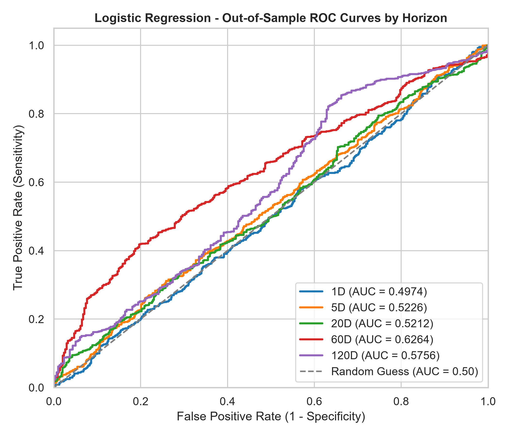
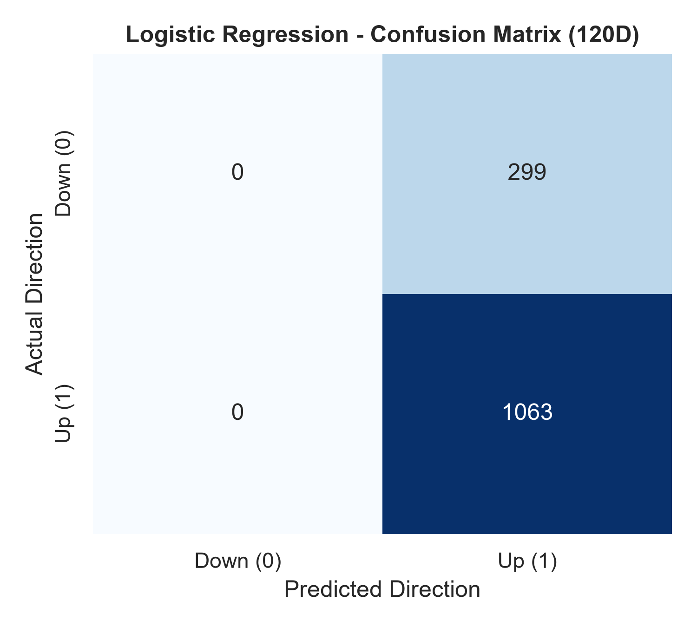

Confusion Matrix 1D
Research Project: When Does Equity Return Predictability Decay? A Multi-Horizon and Regime-Dependent Out-of-Sample Analysis
Model Family: Linear Models / Classification | Model Category: Classification
Evaluation Status: Strict Walk-Forward Out-of-Sample & Independent Hold-out Verification
Logistic_Regression{'C': 0.001, 'class_weight': None}The table below synthesizes predictive performance across the three evaluation stages. Note that Part A and Part B evaluate on Walk-Forward Validation (Split 2), whereas Part C evaluates on the strictly independent hold-out test set (Split 3).
| Evaluation Stage | OOS_R2 | RMSE | MAE | DA (%) | Naive Positive DA (%) | Excess DA (pp) | DM Statistic | DM p-value | Sign Test p-value | N |
|---|---|---|---|---|---|---|---|---|---|---|
| Part A – Before Tuning | N/A | N/A | N/A | N/A | 54.00% | 0.00 | N/A | N/A | N/A | N/A |
| Part B – After Tuning | N/A | N/A | N/A | N/A | N/A | N/A | N/A | N/A | N/A | 1360 |
| Part C – Final Independent Test | N/A | N/A | N/A | 63.92% | N/A | N/A | N/A | N/A | 0.2000 | 1362 |
Analysis of predictive decay across horizons from ultra-short term (1D) to long-term macroeconomic horizon (120D).
| Horizon | OOS_R2 | RMSE | MAE | DA | Naive_Positive_DA | Excess_DA | DM_Stat | DM_pvalue | Sign_pvalue | Observations |
|---|---|---|---|---|---|---|---|---|---|---|
| 1D | nan | nan | nan | 0.489 | 0.53 | 0 | nan | nan | 0.7995 | 1362 |
| 5D | nan | nan | nan | 0.5117 | 0.53 | 0 | nan | nan | 0.2005 | 1362 |
| 20D | nan | nan | nan | 0.6689 | 0.53 | 0 | nan | nan | 0 | 1362 |
| 60D | nan | nan | nan | 0.746 | 0.53 | 0 | nan | nan | 0 | 1362 |
| 120D | nan | nan | nan | 0.7805 | 0.53 | 0 | nan | nan | 0 | 1362 |
Performance breakdown conditioned on market volatility regimes (Low, Normal, High) constructed using expanding quantiles.
Multi-dimensional matrix displaying performance across the 5 × 3 Horizon × Regime state space.
[!NOTE]
Single Tuned Workflow Execution: Traditional models in this research suite were tuned directly during Walk-Forward Validation (Lan01) using cross-validated Grid Search and Optuna TPE. A separate un-tuned baseline run was not persisted in the repository archives.
The Final Independent Hold-out Test (Split 3: 2020–2026, 1,362 days) serves as the definitive out-of-sample empirical evidence. All preprocessing steps and hyperparameter choices were completely frozen prior to test inference.
N/A)N/A (OOS R² = N/A)N/A (OOS R² = N/A)N/AN/A
